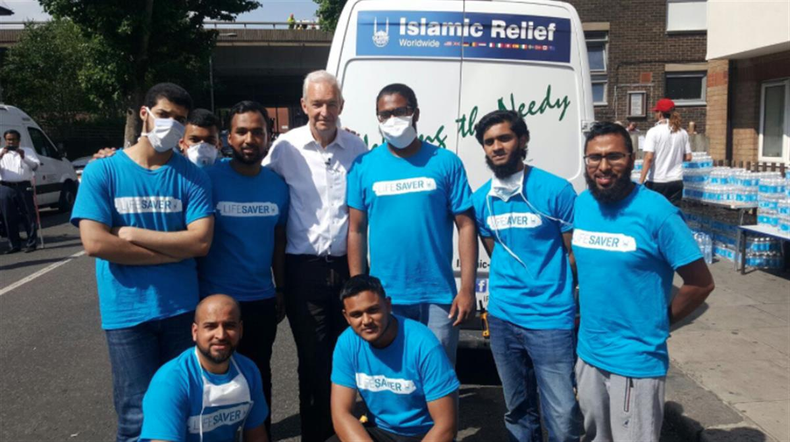
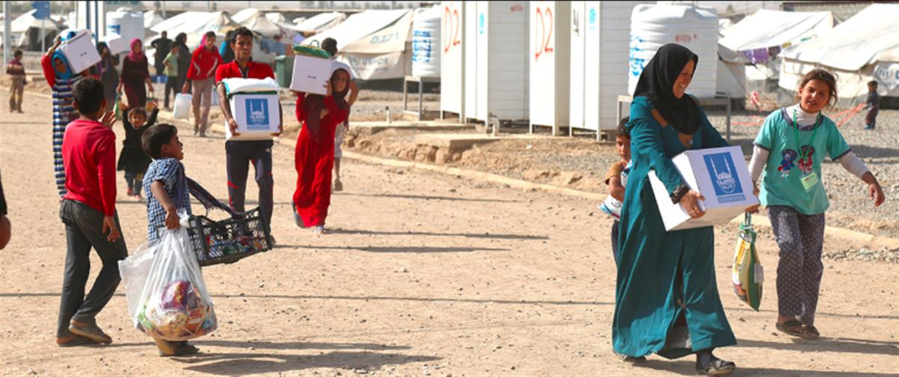

Promoting development and sustainable livelihoods
Islamic Relief helps poor communities to improve their lives. With a focus on sustainable development, our programmes give poor people better access to essential services, and the opportunity to improve their livelihoods and lift themselves out of poverty, permanently.
View more on Empowering communities
SOURCE: ISLAMIC RELIEF